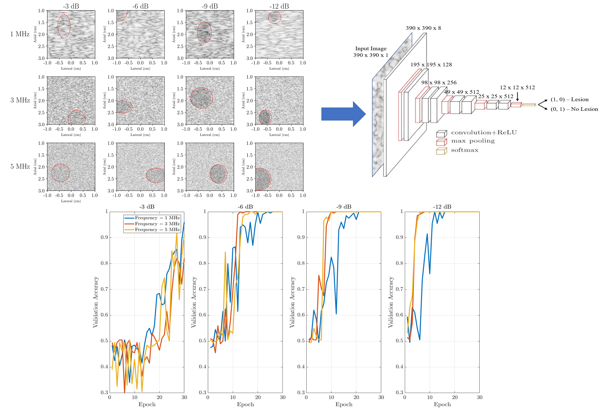

| Paper PDF |

|
The detection of lesions such as tumors in ultraosund images suffers from a high false negative rate, with as many as 30% of breast tumors going undetected. This study used a modified VGG network to detect lesions in ultrasound images with varying resolutions and lesion contrasts. The network was able to achieve a high level of classification accuracy, even in cases where the lesion was not visible to the human eye. Higher resolution images achieved high classification accuracy earlier in the training process, but all resolutions achieved perfect validation accuracy for lesions with contrasts greater than or equal to -6 dB. Future development of this work using large datasets with in vivo images would support the development of computer aided diagnosis for lesion detection in ultrasound images.
|
|
|
| Paper: |
Code and Data:
|